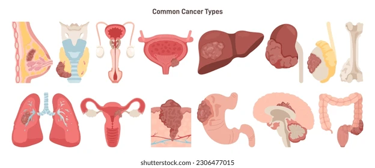

Cáncer
El cáncer es cuando unas células de tu cuerpo crecen sin control y forman bultos (tumores) que dañan los órganos. En México es muy abundante porque fuman mucho, toman alcohol y comen mucha comida procesada que inflama el cuerpo, además de que el sistema de salud a veces tarda años en detectarlo. El gran problema aquí es que, como no se checa uno seguido, casi siempre nos damos cuenta cuando el bicho ya está muy avanzado y es más difícil de matar.
En México, el cáncer no se detiene porque el equipo especializado, como los mastógrafos o máquinas de radioterapia, casi solo existe en las ciudades grandes. El costo del traslado y de los estudios hace que la gente prefiera ignorar los síntomas hasta que el dolor es insoportable, perdiendo tiempo vital para la cura. Esta falta de equipo y dinero en las zonas rurales provoca que miles de mexicanos lleguen al hospital cuando ya es demasiado tarde para salvarse. La lucha diaria contra los efectos de la enfermedad y los tratamientos desgastantes transforma la identidad del paciente, quien debe aprender a vivir con una incertidumbre constante sobre su futuro. El impacto va mucho más allá del cuerpo, dejando cicatrices invisibles que cambian para siempre la forma de ver y valorar la vida.

Para no llegar a tener esta enfermedad, estas son acciones para evitarlo:
- No esperes a que te duela algo; hazte tus estudios (Papanicolau, mastografía o próstata) a tiempo.
- Come más fibra como frutas y verduras que ayudan a que tu sistema limpie toxinas que pueden causar tumores.
- Usa bloqueador y evita exponerte a humos o químicos fuertes sin protección.